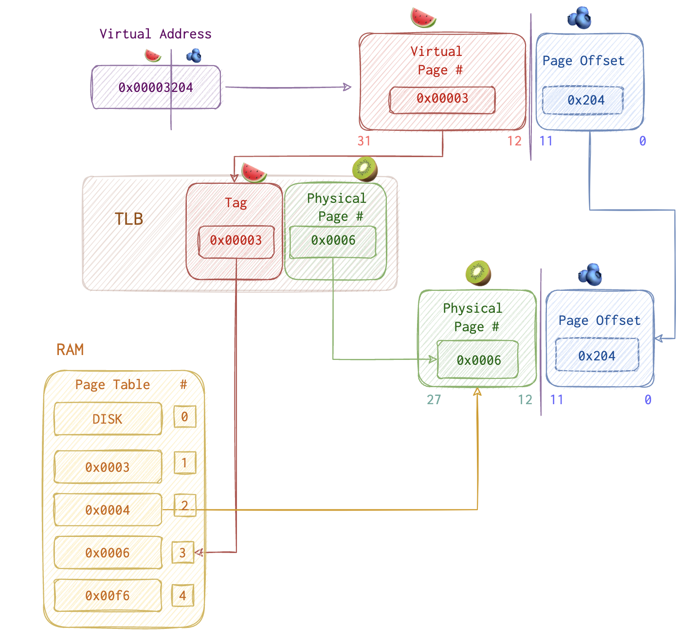
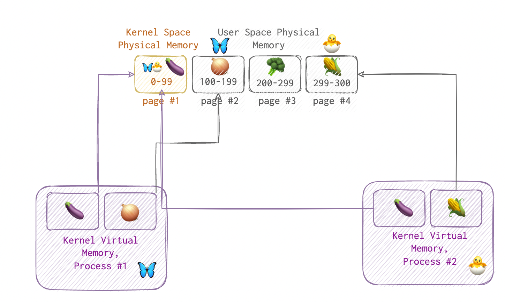
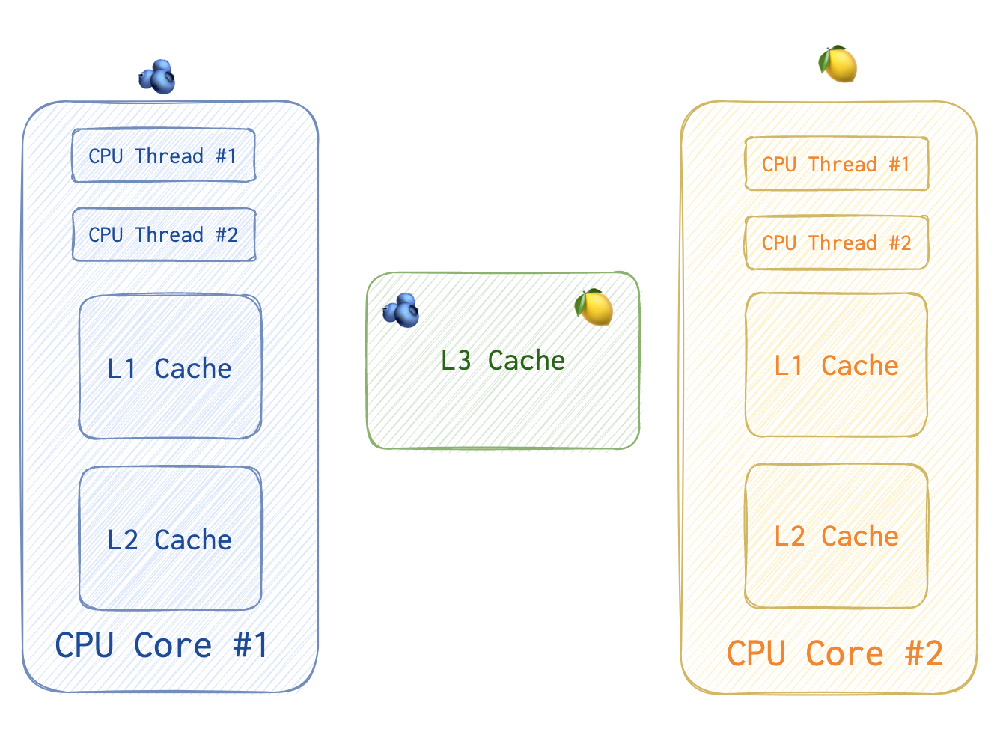

In this article I will dissect what CPU Cache and TLB are. It can help understand how Meltdown and Specter work.
TLB
Usually, OS performs translations between PA and VA. Those addresses already translated are cached in TLB (Translation Lookaside Buffer). The 1st priority is TLB, the second - page table lookup (since it takes more time).
If TLB’s full, least used entry will be replaced with the one just requested.

So, on the picture above virtual page #3 = physical page #6.
If the requested memory address is on Disk, there will be TLB miss (nothing found). Then TLB eviction (popping off the least used entry) and reading from DISK then which is very costy.
Let’s imagine a little talk between a CPU 🤓 and a program 🤪.
‘- 🤪 A program asks CPU for an address: “CPU, I need something that’s at 0x40154a”".
‘- 🤓 Says “Ok”, but thinks: “This is a virtual address, I need to get a real one”. CPU is like a bank: gives out a lot more than he actually has. If all the processes running would request all their address space AT ONCE, the CPU would be broke.
Then, CPU 🤓 checks the TLP 📘, but say it doesn’t find 0x40154a there. So, CPU now needs to open yet another book 📗 - the page table. Here it is. CPU 🤓 gives the data at this address back and saves this mapping for future should the program need this once more.
‘- 🤪 A program asks CPU for the same address again: “CPU, I need something that’s at 0x40154a”".
‘- 🤓 Says “Ok”, but thinks: “This is a virtual address, I need to get a real one”.
Then, CPU 🤓 checks the TLP 📘, and luckily finds it there since it saved this mapping not long ago.
Kernel vs User Space
 If a process from user space tries acessing kernel space, page fault will be raised. So, kernel’s mapped in each process - dual mapping, it’s called. And as we can see on the picture, it is backed by the same physical memory.
CPU Cache
 Each CPU thread has a complicated pipelining engine capable of executing instructions out of order. Usually, one CPU core has up to four threads (for Hyper-Threading (HT) processors).
CPU thread is the basic unit of execution. Each has a separate set of registers and can execute a stream of machine code. Most modern CPUs have 2 threads per core.
Additionally, each CPU core has two dedicated caches that are used based on the requirement for speed and memory. The cache closest to the main memory and farthest from the CPU is larger, slower, and less expensive to operate. On the other hand, the cache closer to the CPU is significantly faster but inherently a little smaller. Also, two cores within one package share one L3 cache.